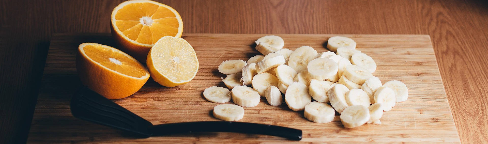

Image by StockSnap (modified) - Pixabay.
Odin Recipes
Tamal(Tamale)
Arroz con maiz(Rice with corn)
Moros y cristianos(Rice and peas)
Arroz con leche(Rice pudding)
Casabe(Cassava bread)
Ajiaco(Cuban soup)
Mojo(Sauce)
Papa rellena(Stuffed potatoes)
Cuba Libre(Rum and Coke)
Ropa vieja(Old clothes)